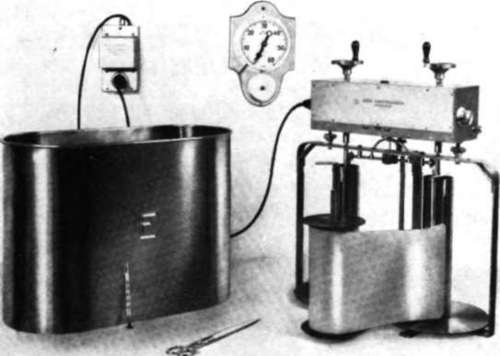

Processing Laboratory Equipment
Description
This section is from the book "Aerial Cameras, Aerial Films, And Film Processing", by Richard W. Underwood.
Processing Laboratory Equipment
Photographic laboratories vary in sophistication from a wooden sink in a darkroom to multimillion-dollar complexes designed to enhance the state of the art. I have seen aerial photographs made with the finest Zeiss or Wild aerial cameras in multimillion-dollar jet aircraft, then processed in a wooden sink using a hand rewind system, chemicals purchased in a hobby shop, and water from a city tap. The resulting film looked good, but no one would ever know if it really was.
Such a simple approach to aerial film processing usually does yield good pictorial quality; in reproduction, the technician can redeem many of his original mistakes. But much may be lost forever. If your goal is good pictorial quality, such a simple solution may be adequate for your needs. However, do not attempt to make any specialized scientific deductions from film processed in this manner.
If one is willing to invest great financial resources in aircraft and/or high-quality aerial cameras, one should never overlook the fact that the photographic laboratory must be equipped to make full use of the information secured. Here, too, one should commence operations with fairly simple equipment and techniques so that the photographic scientists and technicians can fully comprehend the science as well as the art.
The tank processor for rolls of aerial films has been in use for over 40 years. The Zeiss Model FE-120 (figure 13) does an excellent job.
Figure 13. Zeiss FE-120 rewind aerial film processor (courtesy Carl Zeiss Co.).
Basically, the tank processor permits a technician to immerse roll film into tanks of chemicals, and an electric motor winds the film back and forth from spool to spool. A good tank arrangement for black-and-white film is:
(1) wetting agent
(2) developer
(3) stop bath
(4) fixation
(5) wash
Steps 1 and 3 are not always necessary.
For color films the process is very complex and time-consuming, and results can be both mediocre and erratic. It is a 16-step process which requires exacting adherence to procedures and is too complex to discuss in this paper. (See American Society of Photogrammetry Manual of Color Aerial Photography.) It should be noted that a dedicated technician can do high-quality work with a rewind system. He can introduce a number of excellent quality control procedures which greatly improve film quality and repeatability. These include:
(1) Temperature Control
This can be accomplished by bringing the chemicals to temperature equilibrium with the darkroom. That would.be a cool 20 °C in most cases. Another method entails the use of temperature-controlled mixing valves with sinks serving as a temperature-controlled water jacket to achieve equilibrium. A thermal heat exchanger, such as the Pako Corporation Pakotemp, could be used to recirculate and temper this water jacket.
(2) Quality Control Of Chemicals
The technician can insure that each batch of chemicals is prepared with extreme care. This includes dilution at proper rates and temperatures, complete blending at proper temperature, and making sure the correct total quantity is made. In addition, he can conduct a number of tests on the resulting chemicals, including specific gravity, pH, and even a qualitative and quantitative analysis.
(3) Water Purity
All water lines should contain efficient filters which are periodically changed. A complete laboratory analysis of the water should be conducted periodically.
(4) Chemical Replenishment
A skilled technician can alter the chemical depletion characteristics of the rewind system by trial-and-error experimentation. A replenisher chemical must be added to each tank at a specific rate and time.
(5) Proper Film Drying
Film should be dried at the proper temperature and humidity in a room which is free of all airborne particulate matter. An air filtration system should be functioning for a number of hours prior to and during the drying operation.
(6) Sensitometric Controls
The technician can preexpose a sensitometric scale on film which is processed with each roll of aerial film. A densitometer can then be used to record the final process and provide the information to the geoscientist.
(7) Accurate Recordkeeping
A competent technician will keep comprehensive records of all information for every roll of aerial film processed.
(8) Time-Gamma Studies
The technician can conduct a series of tests which show the effects of various parameters on the sensitometric characteristics of processed film. He can vary development time, temperature, chemicals, replenishment rates, etc. These tests, in conjunction with his accurate recordkeeping will permit him to process and reproduce aerial photography with the wide variety of results which may be required by the geoscientist.
The automatic aerial film processor was introduced in the late 1940's. Early models were generally not too effective. Problems were numerous and results were generally no better than those achieved by a competent technician. Equipment costs were great when evaluated against results.
During the 1950's many improvements were made, and in the early 1960's an economically feasible automatic film processor came on the market (namely the Eastman Kodak Versamat, model M-ll). This roller transport aerial film processor proved exceptionally reliable, extremely versatile, and economically practical. Using this equipment, a technician who could process two rolls a day could now process 20 or more to far more exacting specifications. This increase in production quickly offset the cost of the equipment.
The versatility of the Kodak Versamat is outstanding. The technician has a great range of chemicals available. He can quickly introduce and exactly hold a large range of temperatures. He can select from a wide range of processing times. Chemical replenishment is accurate and simple. In addition, film is properly dried in dust-free air, and sensitometric repeatability is excellent.
You may wish to investigate the photographic market and evaluate a number of automatic aerial film processors, but in my opinion the Kodak Versamat should be the standard that the others are evaluated against. At the present time, several Ver-samats are in constant use within the Earth Resources Survey Program at the Manned Spacecraft Center. For your particular application, however, you may find that other automatic film processors are better suited.
Following the development of the Kodak Versamat, the next logical step was to produce a similar device for aerial color films. The Kodak roller transport aerial color film processor, generally called the Color Versamat, was introduced in 1965. It is this device that made aerial color films totally utilitarian and economically feasible. It permits those who use color films in their geoscientific studies to secure accurate and repeatable results, and this equipment should be given serious consideration if color or color infrared photography is contemplated. These machines can process color positive or color negative aerial films with equal facility.
No matter which type of automatic equipment is utilized, the importance of high-standard quality control procedures cannot be overemphasized.
Continue to: